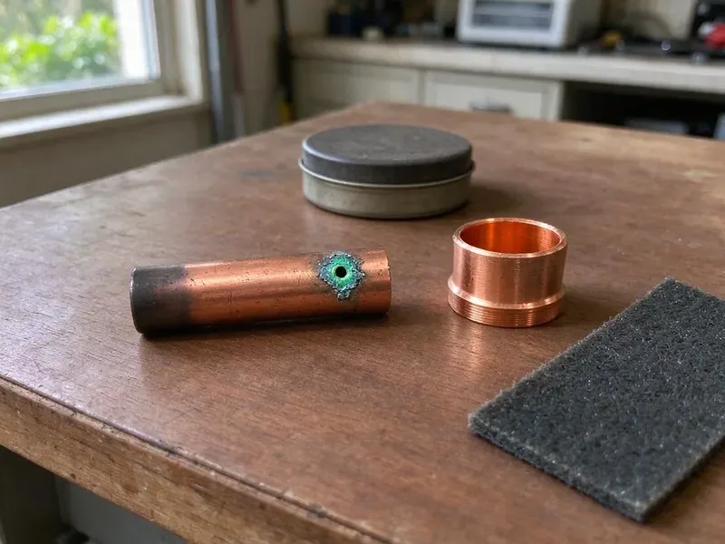

Water Softener Repair in Minot, ND
We repair Fleck, Clack, Kinetico, Pentair and other softeners across Minot, ND, with a flat price and stocked parts.
- Fast Local Visits
- Trained Technicians
- Valve Repair
- Most Major Brands
Hard water creeping back? We repair softeners in Minot, ND.
Call now and we will test your water and fix the softener, often on the first visit.
Water Softener Repair in Minot, ND That Saves Your Plumbing
HPN Plumbing repairs water softeners across Minot, ND, from a crusted brine tank to a dead valve motor. Water in North Dakota is often very hard, with high mineral and sulfate content that builds scale in water heaters and fixtures. Once a softener stops, that hardness goes right into the water heater and every fixture. The typical repair is one to two hours.
Our expertise includes:
- Control valve diagnosis and leak repair
- Injector, brine line and float service
- Resin bed replacement

Additional Plumbing Repair Services in Minot, ND
We offer expert plumbing repair services across Minot, ND to stop leaks, clear blockages, and keep every fixture working the way it should.


Customers
Why Choose HPN Plumbing for Water Softener Repair in Minot, ND?
Mineral buildup starts the day a softener stops working. Appliance damage follows. Fast repairs keep scale out of the heater and appliances, which cost much more than the repair.
- Flat Pricing, You get a clear price before any work begins, and it does not change.
- Brand Know-How, Our plumbers know the valve heads in most home softeners and carry the common seals.
- Clear Explanations, You get a straight explanation of the problem and the options before work begins.
Citywide Coverage
Every neighborhood in Minot is covered by HPN Plumbing, so softener repair is one call away. Local water conditions are familiar to us.
Experienced Team
Our technicians have serviced hundreds of softeners, including the Fleck 5600 and 7000, the Clack WS1 and Kinetico twin tanks. That experience makes diagnosis fast.
Safety-First Approach
We test every connection for leaks and confirm the bypass works so you can isolate the softener later. The control is always unplugged before electrical work.
Trusted Certified Minot Plumbing Services Professionals
At HPN Plumbing, we are proud to offer certified plumbing services throughout Minot, ND. Credentials matter in this trade. Our plumbers hold recognized industry credentials, and they follow strict safety and quality rules on every repair, installation and maintenance call we run.
Call Us Now PHCC Plumbing Contractor Recognition
PHCC Plumbing Contractor Recognition Better Business Bureau (BBB) Accreditation
Better Business Bureau (BBB) Accreditation Angi Certified Pro
Angi Certified Pro ISO 9001 Quality Management Certification
ISO 9001 Quality Management CertificationValve, Resin and Brine Repair in Minot, ND
Urgent Water Softener Repair in Minot, ND
Major leaks and total system failure call for a fast response. HPN Plumbing handles urgent softener calls in Minot, ND ahead of scheduled maintenance. The unit goes into bypass so you keep water, and then we fix whatever failed. Bypass first.

Water Softener Brands We Repair in Minot
Culligan, Kenmore, Whirlpool, EcoPure, Morton and GE are the softener brands we see most in Minot homes, along with store-brand models sold under other names. Our technicians know their valve designs and common failures. HPN Plumbing stocks the wear parts, so most repairs finish on the first visit with no wait for parts.
Resin Bed Replacement in Minot
Chlorine eats resin slowly, and after enough years the beads swell, break and stop exchanging the calcium and magnesium they are supposed to hold. Older systems on chlorinated city water see it most. HPN Plumbing removes the old resin and installs fresh, high-capacity media. Capacity comes back right away.
Control Valve Rebuild in Minot
Service, backwash, brine and rinse are the four cycles the control valve directs every time the softener regenerates, usually in the middle of the night. Over the years, seals, spacers and pistons wear down. Common signs are leaks at the head or constant drain flow. A matching rebuild kit fixes it.
Salt Bridge and Brine Tank Repair in Minot
Salt bridges form when a hard crust builds across the brine tank and the salt below it stops dissolving into the water. Salt sits there unused, and regeneration fails. We break the bridge, clean out the mushy salt and check the float and brine well. Cracked tanks get replaced.
Control Valve Troubleshooting and Repair in Minot, ND
Stuck pistons, worn seals and failed drive motors cause most control valve trouble, and the symptoms are hard water, constant regeneration or a leak at the head. We diagnose the valve on site. Seal kits and pistons for Fleck, Clack and Autotrol valves ride on the truck, so most rebuilds happen on the first visit.
Commercial Water Softener Repair in Minot, ND
Laundromats and restaurants in Minot, ND run through soft water fast, and a dishwasher or boiler starts scaling the moment the softener stops working. Every day of downtime costs money. HPN Plumbing repairs commercial-grade softeners, including twin-tank and larger valve systems. Work can be done after hours.

Water Softener Leak Detection and Repair in Minot, ND
Cracked tanks, loose fittings and failed O-rings are behind most softener leaks. Even a slow drip wastes water and soaks the floor. Once we find the source, from the bypass to the drain connection, the failed seal or fitting gets replaced. We test it under pressure.
Water Softener Repair Near Me in Minot, ND
Water in North Dakota is often very hard, with high mineral and sulfate content that leaves deposits in water heaters and fixtures. Our technicians know the water conditions across town and set each repaired softener to match. Softer water and smaller salt bills follow.
Searching for water softener repair near me in Minot, ND mostly turns up salt delivery. HPN Plumbing sends an actual repair tech, often the same or next day. We rebuild valves, replace resin and fix brine problems on the spot, and we carry the parts for the brands most common in local homes. You get soft water back quickly.
HPN Plumbing at a Glance
- Licensed and insured plumbers serving Minot, ND
- 24/7 emergency service with same-day scheduling
- Clear written estimates, no hidden fees
- 4.9-star rated by 408+ North Dakota customers
Minot Map
Minot Information
- Population
- 47,373
- Area codes
- 701/406/320
- Service area
- Minot and towns within a 40 mile drive
- Nearby
- Minot AFB, Watford City, Mandan, Bismarck
Water hardness changes from place to place in Minot, ND, and a working softener keeps scale off fixtures and heaters while making the water easier on skin and laundry.
Talk to a Plumber
Call HPN Plumbing for honest, reliable plumbing from people who know the trade in Minot, ND.
Our Specialized Plumbing Services in Minot, ND
At HPN Plumbing, we handle the full list of plumbing services across Minot, ND. We go from leak detection all the way to full system installations, for homes and commercial buildings, and we do it quickly at a fair price. Take a look at our core services below:


From Hard Water to Soft in Minot, ND
Our softener repair process keeps things simple, and the fix lasts across Minot, ND.
Request a Quote
Call (701) 403-1348 or use the online form to book a visit. A few questions about the unit help us prepare.
Inspection
A HPN Plumbing plumber arrives on time and inspects the softener. We test to find the cause.
Options and Price
We explain the problem in plain language and give you a flat price. You choose before work begins.
Frequently Asked Questions About Water Softener Repair in Minot
Minor repairs in Minot, ND, like a sensor or a drive motor, usually run $150 to $350. A control valve rebuild or a resin replacement can land between $400 and $800 or more, depending on the brand, the tank size and how much resin it holds. We quote after diagnosis.
Every one to two years is a good interval. Regular service catches problems early and keeps the unit running at full capacity.
A clogged drain line or a failed control valve stops a lot of softeners. The rest come from salt bridges, spent resin, power outages or scale inside the valve. Testing finds which one.
Most repairs take one to three hours when the parts are on hand. A full resin replacement or a major valve overhaul can take longer.
Over time, yes. Scale builds in the tank or on the heat exchanger, cutting efficiency and life. A quick fix protects both.
Most major brands, yes. HPN Plumbing technicians work on GE, Whirlpool, Culligan, Kenmore, EcoPure and Morton models, with access to parts for most units.
Yes. HPN Plumbing warranties both labor and replacement parts on every softener repair, with the details written up at the time of service.
A quality softener can last 10 to 15 years or more, though resin may wear out sooner on chlorinated city water. Expect a seal kit on the valve somewhere along the way.
What People Are Saying About Our Plumbing Experts?

Rachel N.
Hard water was leaving white crust on every faucet and our dishwasher was struggling. The tech tested the water, recommended a softener sized for a family of five, and installed it with a bypass valve in one afternoon. The spots on our glasses are gone.
Water Softener · Williston, ND
Tyler J.
We bought a taller comfort height toilet for my dad, who just had knee surgery. The plumber pulled the old one, found the flange was cracked, and replaced it before setting the new bowl. Took about two hours.
Toilet Installation · Minot AFB, NDLisa C.
Water was pouring out from under the washing machine on a holiday weekend. HPN Plumbing talked me through closing the valves over the phone and had a plumber at the house within ninety minutes. It was a burst fill hose.
Emergency Plumbing · Williston, ND
Mark T.
The floor drain in our office break room backed up every few weeks. The plumber ran a cable, then put a camera down and found roots at a joint about thirty feet out. Seeing it on the screen made the decision easy.
Drain Cleaning · Watford City, NDMegan L.
Our upstairs tub drained so slowly that every shower turned into a bath. HPN Plumbing pulled a wad of hair out of the stopper and then snaked the line past the trap. Three months later it still drains fast.
Drain Cleaning · Williston, ND
Sofia M.
Two new toilets went in during one visit. The tech set them on new wax rings and swapped the old supply lines. He also noticed our bathroom faucet dripping and replaced the cartridge while he was there. No mess left behind.
Toilet Installation · Devils Lake, ND